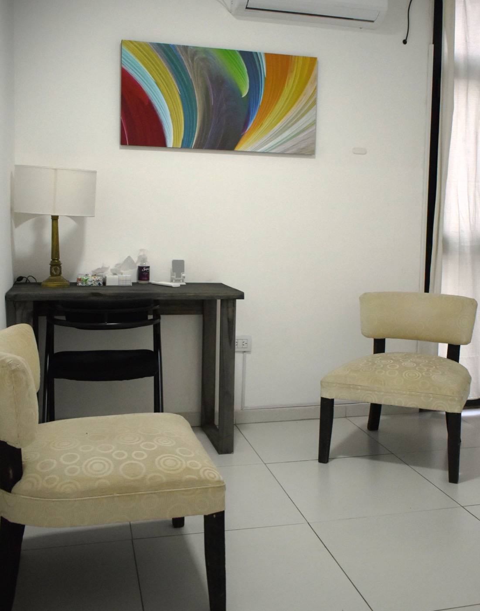
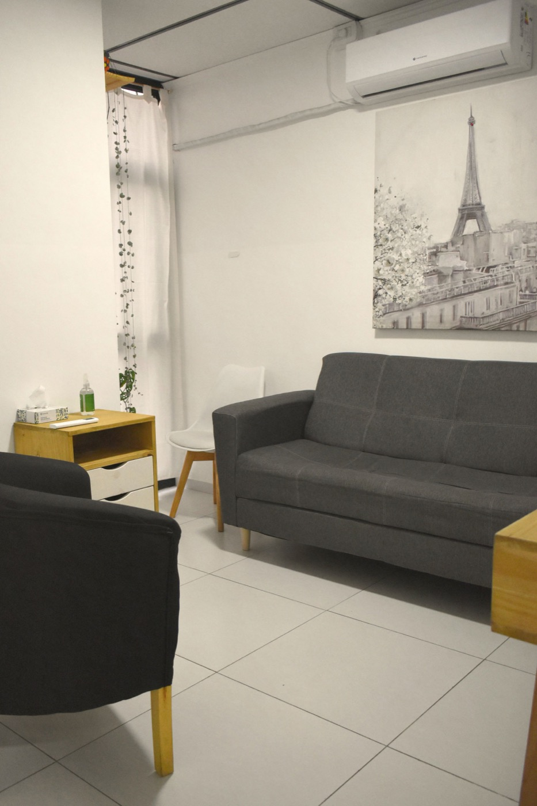
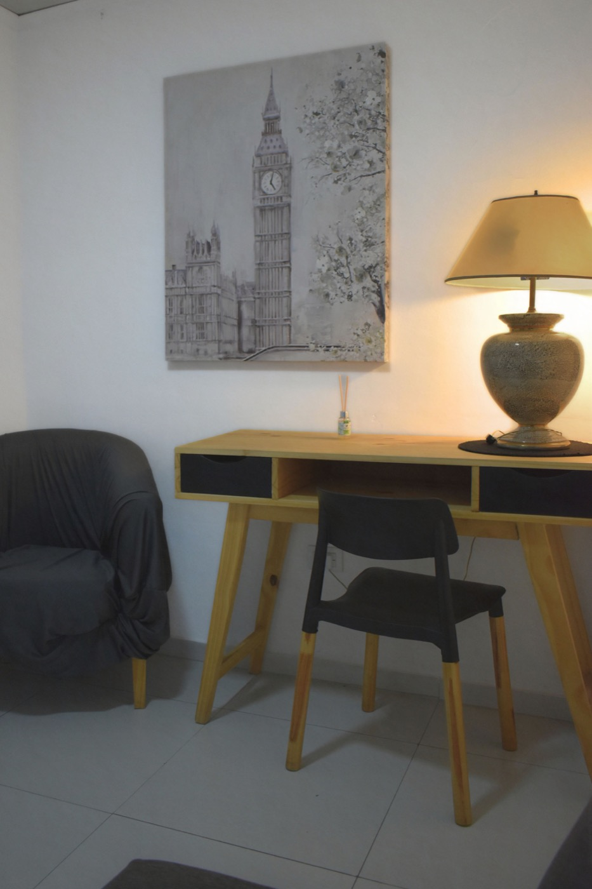
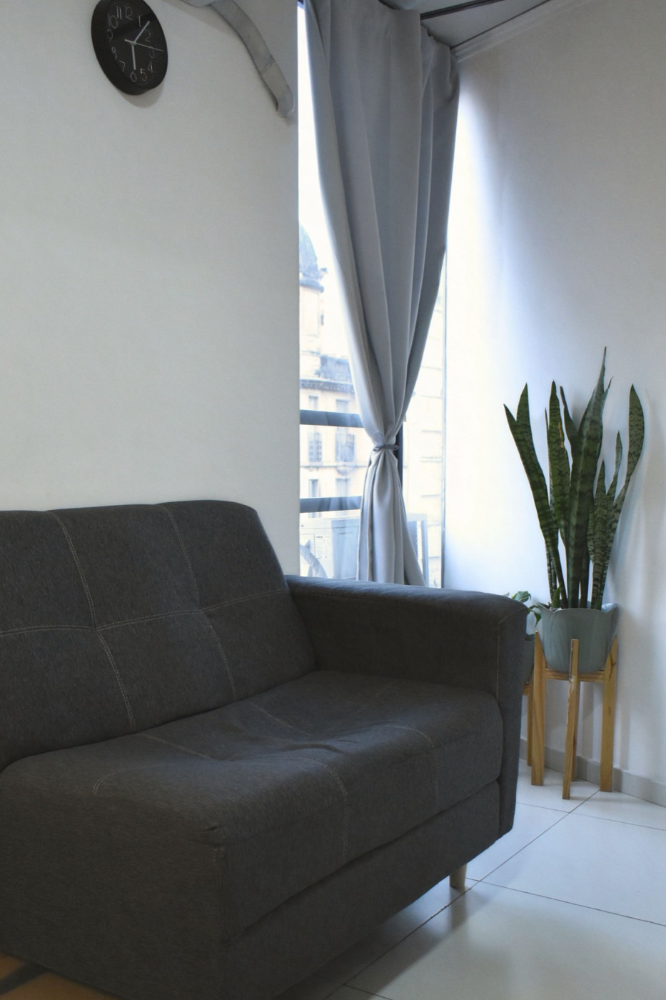
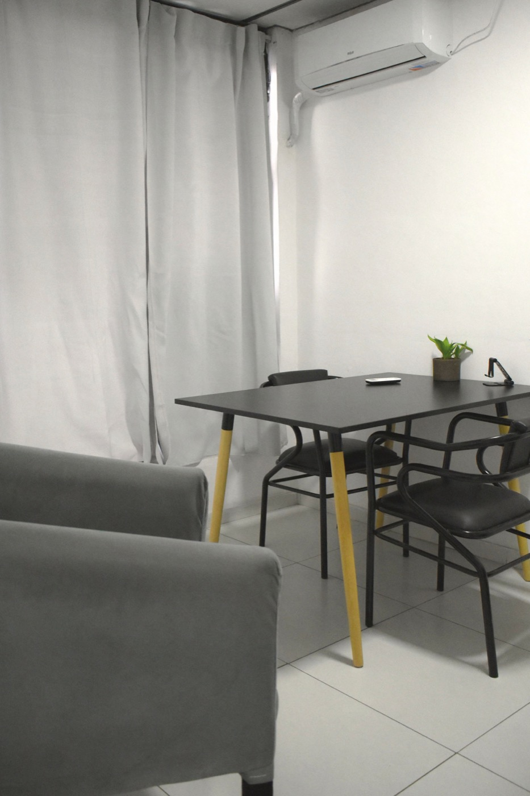
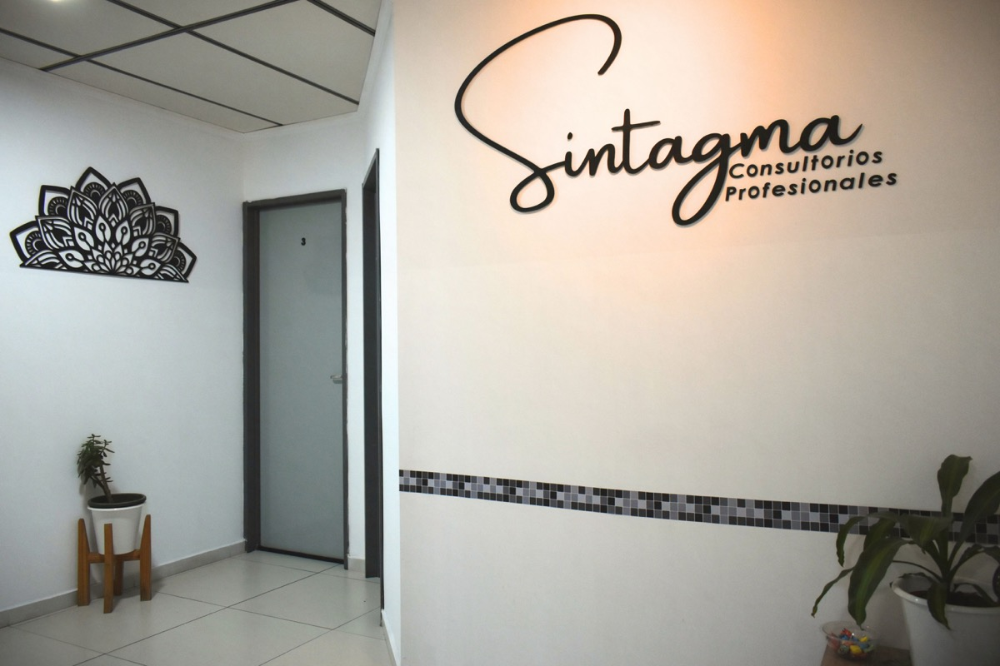
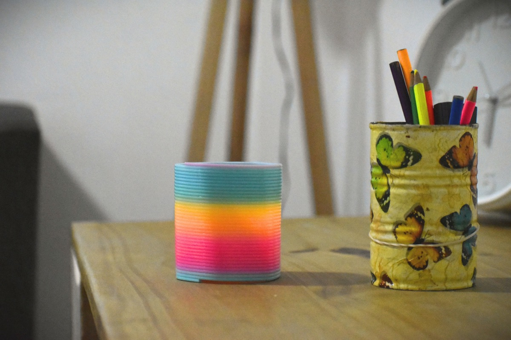
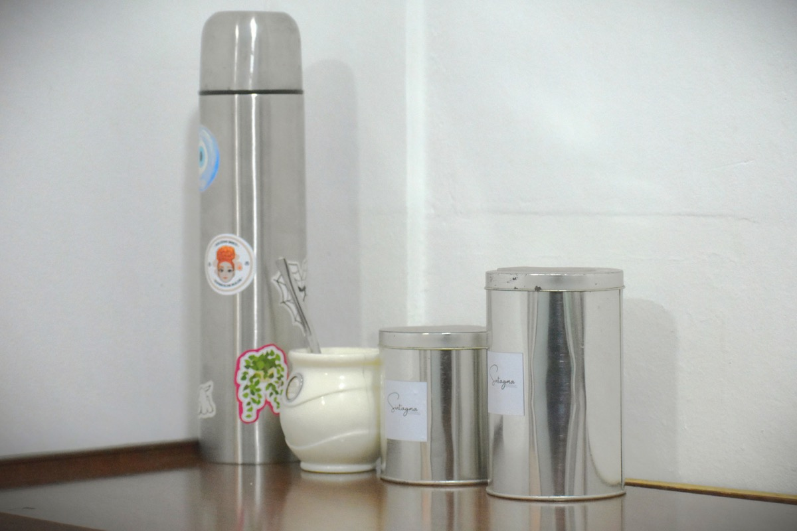
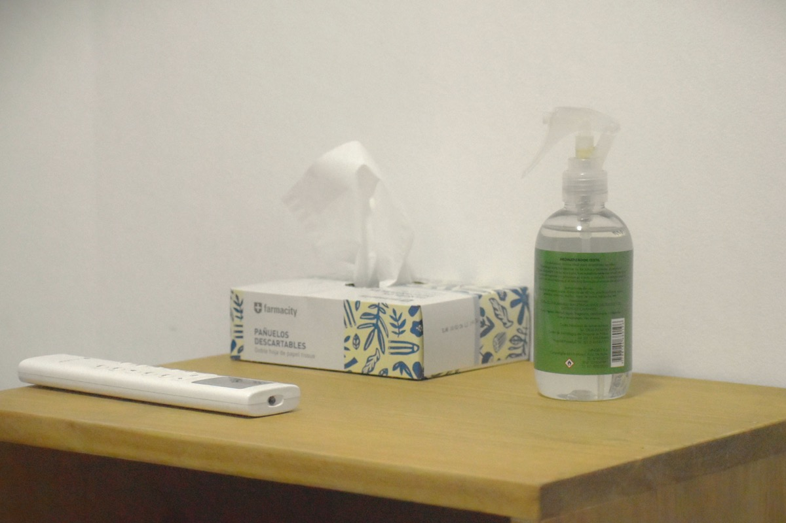

Consultorios equipados
Mobiliario y disposición adecuados para sesiones, entrevistas y encuentros profesionales, con wifi de alta velocidad para atención online.
Consultorios profesionales en Córdoba
Espacios para profesionales que necesitan atender en un entorno sobrio, reservado y listo para recibir pacientes.
Sintagma reúne cuatro consultorios preparados para la práctica clínica, con una imagen profesional e identidad propia.
Consultorios disponibles
Cada consultorio está preparado para sostener un encuentro privado, cómodo y profesional. La elección puede depender del tipo de encuadre, la disponibilidad horaria y el clima de trabajo que prefieras.





La disponibilidad se coordina por módulos horarios. Consultanos para conocer días, turnos y condiciones.
Consultar módulosServicios del espacio
Mobiliario y disposición adecuados para sesiones, entrevistas y encuentros profesionales, con wifi de alta velocidad para atención online.
Área común para recibir pacientes de forma ordenada, clara y discreta, con música funcional.
Edificio con portería y guardia, cámaras de seguridad.
Ambientes acondicionados para sostener comodidad durante las sesiones.
Espacio para profesionales con infusiones, dispenser y pava eléctrica.
Limpieza diaria de los consultorios para tu comodidad.
Detalles del lugar
La recepción, la circulación y los detalles visuales ayudan a que el espacio se perciba profesional, tranquilo y reconocible desde el primer momento.




Para profesionales
Para clientes
Ubicación
Una ubicación práctica para profesionales y pacientes. Abrí el mapa para calcular tu recorrido hacia la zona.
Abrir en Google MapsContacto
Escribinos para conocer módulos disponibles, condiciones de alquiler y coordinar una recorrida por los consultorios.
Envianos un mail a: sintagmaconsultorios@gmail.com